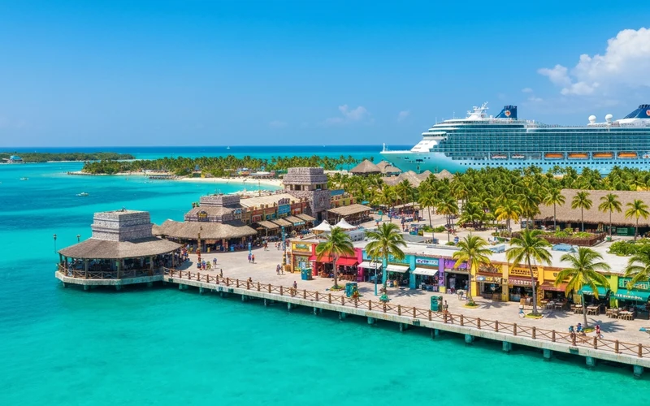
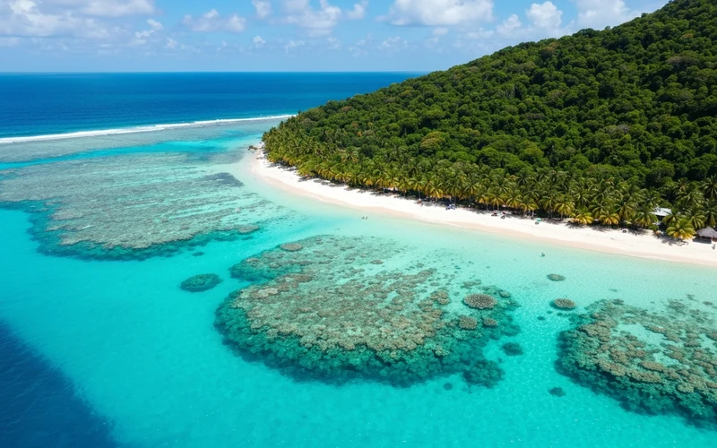
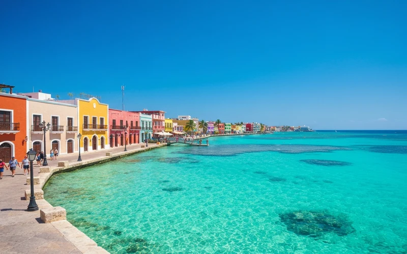

El MSC Seascape es uno de los cruceros más impresionantes que salen de Texas — y desde Galveston puedes abordar un barco de clase mundial sin necesidad de tomar un vuelo. En 7 noches, este crucero te lleva a tres destinos del Caribe occidental: Costa Maya en México, la increíble Isla de Roatán en Honduras, y el icónico Cozumel. Un viaje que combina días de mar, playas de arena blanca, arrecifes de coral y toda la experiencia de lujo que ofrece MSC.
¿Sabías? Galveston es el 4° puerto de cruceros más grande de EE.UU. y tiene excelente conectividad desde todo Texas — a solo 4 horas de Dallas, 50 minutos de Houston. Perfectamente manejable en auto o autobús.
Para la comunidad venezolana y latina en Texas: MSC Cruceros es una naviera de origen europeo con fuerte presencia en Latinoamérica — es probablemente la línea de cruceros donde más fácil encontrarás personal hispanohablante a bordo, menús familiares, y un ambiente que se siente cómodo desde el primer día. El itinerario por Costa Maya, Roatán y Cozumel también incluye paradas donde el español es el idioma del día, los precios en tierra son accesibles y la comida local es espectacular.
El MSC Seascape: el barco
El MSC Seascape es un barco de clase World Class de MSC Cruceros, con capacidad para más de 5,800 pasajeros. Fue lanzado en 2022 y es uno de los barcos más modernos de la flota MSC. Lo destacado a bordo:
- 21 cubiertas con múltiples piscinas, pistas y áreas de entretenimiento
- 14 restaurantes (varios especializados con costo adicional, el principal sin costo)
- 19 bares y lounges incluyendo el famoso Cocktail Bar con vista al mar
- Pista de sky trail suspendida sobre el océano, zipline exterior y toboganes acuáticos
- MSC Aurea Spa — spa y zona de bienestar con vistas al océano
- Casinoʼ MSC a bordo, teatro principal con shows nocturnos y entretenimiento en vivo
- Zona familiar con área exclusiva para niños y programas Youth Center
- Butler service en camarotes MSC Yacht Club (clase superior)
Itinerario: 7 noches Caribe Occidental
El itinerario completo del MSC Seascape desde Galveston para el Caribe Occidental (Western Caribbean):
Abordaje a partir de las 12:00 pm. Zarpe a las 5:00 pm. Tarde en alta mar para instalarte y explorar el barco.
Día completo a bordo. Piscinas, spa, shows, restaurantes. El Golfo de México.
Un destino menos conocido que Cozumel pero igual de impresionante. Arrecifes de coral vírgenes, Laguna Bacalar cercana, pueblito pesquero de Mahahual.
La joya del Caribe hondureño. Barrera coralina de clase mundial (segunda más grande del mundo), West Bay Beach, snorkel, buceo y canopy.
Día de descanso en el Mar Caribe. Tumbona, libro, cóctel. O actividades a bordo.
El más famoso del itinerario. Shopping, margaritas, snorkel en el Parque Chankanaab, buceo en el arrecife Palancar. Ideal para compras y artesanías.
Último día completo a bordo. Última noche de shows, gala, despedida del barco.
Arribo temprano a Galveston. Desembarque a partir de las 7:00 am hasta las 9:30 am.
Próximas fechas — Agosto a Octubre 2026
Las salidas disponibles del MSC Seascape desde Galveston para el Caribe Occidental en agosto, septiembre y octubre 2026 (salidas dominicales cada semana):
Disponibilidad y precios sujetos a cambio. Cotiza con nosotros para confirmar disponibilidad en tu fecha preferida.
Tipos de cabina y precios
El MSC Seascape ofrece varias categorías de cabina, desde la más básica hasta el exclusivo Yacht Club:
Cabina Interior
Sin ventana. Ideal para quienes pasan la mayoría del tiempo fuera del camarote. Incluye todas las comidas en restaurante principal, entretenimiento y acceso a instalaciones.
Cabina con Vista al Mar
Ventana fija con vistas al océano. Más luminosa que la interior. Mismas inclusiones que interior.
Cabina con Balcón
Balcón privado para disfrutar del amanecer y los puertos. La opción más popular para parejas. Incluye todas las comidas en restaurante principal.
MSC Aurea Suite
Suite con ubicación premium, acceso al spa MSC Aurea con ilimitado uso de las instalaciones termales, servicio prioritario y restaurante especializado incluido.
*Precios por persona en base doble para salidas agosto–octubre 2026. Precios varían según fecha y disponibilidad. Cotiza tu fecha exacta para confirmar.
Salidas semanales en agosto, septiembre y octubre 2026
Te consigo el precio real con disponibilidad confirmada en menos de 2 horas
Cotizar ahoraLos 3 destinos del itinerario

Menos masificadoCosta Maya, México
Destino menos masificado que Cozumel. Arrecifes de coral vírgenes, la laguna de Bacalar a 2 horas, y el tranquilo pueblo de Mahahual.

2ª barrera coralRoatán, Honduras
Parte de la 2ª barrera de coral más grande del mundo. West Bay Beach es considerada una de las mejores playas del Caribe. Perfecta para buceo y snorkel.

Más famosoCozumel, México
El puerto más famoso del Caribe mexicano. Shopping, arrecife Palancar, parques acuáticos, margaritas y el mejor snorkel del Caribe.
Costa Maya, México
Costa Maya es el destino menos conocido del itinerario — y eso es precisamente lo que lo hace especial. A diferencia de Cozumel, no está masificado de cruceristas. El puerto en sí tiene una zona turística con restaurantes, tiendas y actividades, pero la verdadera joya es el arrecife de coral casi virgen frente a la costa y el pueblo pesquero de Mahahual. Si tienes interés, la Laguna de Bacalar — conocida como el “Lago de los Siete Colores” — está a 2 horas en taxi y es uno de los lugares más espectaculares de México.
Isla de Roatán, Honduras
Roatán es la joya del Caribe hondureño y uno de los mejores destinos de buceo del mundo. La isla forma parte del Sistema Arrecifal Mesoamericano, la segunda barrera de coral más larga del planeta. El barco atraca en Mahogany Bay, un muelle privado con playa propia. La playa de West Bay, a 15 minutos en taxi, tiene aguas cristalinas turquesas y arena blanca fina. El snorkel aquí literalmente te deja sin palabras — los corales y peces están a metros de la orilla. Para los que quieren adrenalina, hay canopy y tirolesa sobre el mar.
Cozumel, México
Cozumel es el puerto más popular del Caribe mexicano y hay una razón simple: tiene todo. Para los amantes del mar, el arrecife Palancar es considerado uno de los mejores sitios de buceo del mundo y está justo frente a la isla. El Parque Nacional Chankanaab ofrece snorkel, avistamiento de delfines y zona de playa. Para los compradores, el downtown de San Miguel tiene cientos de tiendas con joyas, tequila, artesanías y souvenirs. Y las margaritas aquí son legendarias.
Cómo llegar desde Dallas a Galveston
Galveston está a 4 horas de Dallas por la I-45 South. Estas son las opciones más populares:
- En auto propio: La opción más cómoda. Hay estacionamientos en Galveston cerca del puerto (Galveston Cruise Terminal) desde $10-15/día. Reserva con anticipación en temporada alta.
- Autobús + ferry: Empresas como Greyhound o FlixBus tienen rutas Dallas–Houston, y desde Houston hay taxis o Uber a Galveston (aprox. 1 hora, $40-60).
- Vuelo a Houston + traslado: Si vienes de una ciudad lejana, vuela a Houston IAH o HOU y toma un taxi/Uber o shuttle a Galveston. Hay servicios de shuttle directo desde los aeropuertos de Houston.
- La noche anterior: Muchos pasajeros prefieren llegar el día anterior y hospedarse en Galveston o cerca del puerto para no estresarse el día de embarque. Galveston tiene buenos hoteles frente al mar.
Tip de logística: El día de embarque, las colas para abordar comienzan desde las 10am. Si llegas antes del mediodía puedes subir al barco, comer en los restaurantes y empezar a explorar mientras el resto de pasajeros llega. El camarote generalmente está listo a las 2pm.
¿Qué incluye el precio del crucero?
- Alojamiento en camarote (7 noches)
- Desayuno, almuerzo y cena en el restaurante principal del barco
- Buffet 24 horas (snacks y desayuno alternativo)
- Entretenimiento a bordo (shows, teatro, animación)
- Acceso a piscinas, jacuzzis y áreas de cubierta
- Acceso a pistas de tenis de mesa, minigolf y actividades deportivas
- Tasas portuarias (en el precio que cotizamos)
No incluye: bebidas (hay paquetes de bebidas ilimitadas a precio fijo), excursiones en tierra, restaurantes especiales a bordo, spa, fotos del crucero, propinas (MSC cobra propina automática de ~$14/día/persona).
Tips para tu crucero desde Galveston
- Paquete de bebidas: Si eres de beber más de 3-4 bebidas al día, el paquete de bebidas ilimitadas conviene. Pregúnanos el precio actual al cotizar.
- Excursiones en puerto: Puedes reservar con MSC directamente (más caro) o con operadores locales en cada puerto (más barato y similar calidad). Nosotros te orientamos.
- Wi-Fi a bordo: Es costoso pero hay paquetes disponibles. Muchos pasajeros optan por desconectarse completamente — ¡es parte de la experiencia!
- Formal night: MSC tiene al menos una noche de gala formal. Lleva algo elegante — vale la pena la experiencia y las fotos son espectaculares.
- Propinas: Se cargan automáticamente a tu cuenta del barco (~$14/persona/noche). No son opcionales en la mayoría de los casos con MSC.
- Efectivo en puertos: Lleva dólares en billetes pequeños para propinas y compras locales en los puertos. Las tarjetas de crédito se aceptan en la mayoría de tiendas.
¿Es tu primer crucero? Lo que nadie te cuenta
Si nunca has hecho un crucero, hay cosas que la gente da por sentadas y que conviene saber antes de embarcar:
- La tarjeta del barco es tu todo: Al abordar te dan una tarjeta (o pulsera) que sirve como llave de tu camarote, método de pago a bordo y documento de identidad en cada puerto. Llévala siempre contigo.
- El barco no te espera: Si se te pasa la hora de regreso al barco en algún puerto, el crucero zarpa sin ti. MSC da los horarios de regreso con claridad; respétalos siempre y lleva un margen de 30-45 minutos.
- Cuenta del barco ≠ efectivo: A bordo casi todo se paga con la tarjeta del barco (cargado a tu cuenta). En tierra, el efectivo (dólares) y tarjetas de crédito son preferibles. Avisa a tu banco antes del viaje que saldrás del país.
- El mareo no es inevitable: El MSC Seascape es un barco grande — el movimiento en mar tranquilo es mínimo. Si eres propenso al mareo, lleva pastillas de dimenhidrinato (Dramamine) como precaución. Los días de mar en el Caribe suelen ser muy calmados.
- Reserva restaurantes especiales al embarcar: Los restaurantes de especialidad (costo adicional) se llenan los primeros días. Si quieres cenar en el restaurante de sushi o la parrilla premium, reserva apenas subas al barco.
- La maleta llega después: Al abordar, tu equipaje registrado lo entregan al camarote horas más tarde (hasta las 7pm). Lleva ropa de cambio, documentos y medicamentos en el equipaje de mano.
Preguntas frecuentes
¿Necesito pasaporte para el crucero desde Galveston?
Sí, es muy recomendable. Aunque técnicamente los ciudadanos americanos pueden usar certificado de nacimiento + ID en cruceros roundtrip desde EE.UU., MSC y prácticamente todas las líneas de cruceros recomiendan fuertemente llevar pasaporte vigente. Si eres latinoamericano (venezolano, colombiano, etc.), el pasaporte vigente es obligatorio.
¿Cuánto cuesta el crucero MSC Seascape desde Galveston?
Los precios para salidas de agosto–octubre 2026 arrancan desde $409 por persona en cabina interior (base doble). Los precios varían según la fecha y disponibilidad — octubre suele ser la temporada más económica. Cotiza con nosotros para el precio exacto en tu fecha preferida.
¿Puedo reservar solo el crucero sin vuelo?
Sí. Si ya tienes cómo llegar a Galveston, podemos cotizarte solo el crucero. Si quieres un paquete que incluya vuelo a Houston + traslado a Galveston + crucero, también lo organizamos.
¿Cuánto tiempo antes del zarpe hay que llegar al puerto?
MSC recomienda llegar al menos 3 horas antes del zarpe (que suele ser a las 5pm, llegada al puerto antes de las 3:30pm). El abordaje comienza desde las 10am. Mientras más temprano llegues, más tiempo tienes para explorar el barco antes de que empiece a llenarse.